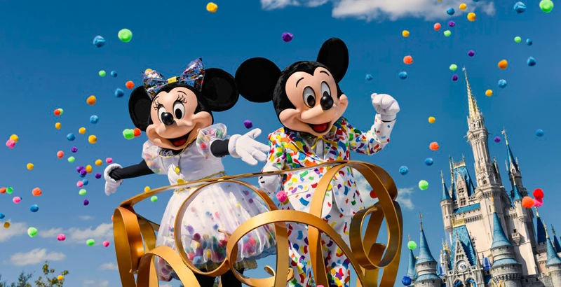

Experimenta nuevamente las inolvidables modas desde la década del 50 hasta la década del 90. Desde los yo-yos y Play-Doh® hasta el Rubik's Cube®, pasando por Big Wheels, elementos de bolos, patines, entre muchos otros iconos, este resort saluda las modas atemporales, los latiguillos, los juguetes y los bailes que cautivaron al mundo a través de las décadas.
Hacer un viaje a través de la cultura pop estadounidense de la última mitad del siglo pasado es la piedra angular del resort Disney’s Pop Century. Como uno de los resorts de “económicos” de Disney, Pop Century tiene beneficios similares a otros resorts en su categoría en términos de tamaño de habitación, comodidades y diseño general. Hay un total de diez edificios en el complejo, cada uno con cuatro pisos (y ascensores). El edificio principal se llama “Classic Hall” y es donde se encuentran el mostrador de Check-in, la tienda de regalos, el patio de comidas y la sala de juegos.
Hay tres piscinas en el complejo, siendo la “Hippie Dippie” la más grande entre ellas. Las otras piscinas se encuentran en el área de los años 90 (Computer Pool) y en la zona de los años 50 (Bowling pool). El patio de comidas en Pop Century se llama “Everything Pop” y sirve una variedad de alimentos que van desde productos horneados hasta pastas y pizzas y especialidades a la parrilla.
Con más de 80 hectáreas, el resort de Disney’s Caribbean Beach es el complejo más grande en la propiedad de Disney. Sus habitaciones están divididas en cinco pueblos de colores brillantes que representan diferentes áreas del Caribe; Trinidad, Martinica, Barbados, Aruba y Jamaica. El lago de 18 hectáreas del complejo está a 2,25 km alrededor y tiene una excelente pista para caminar / trotar. En el medio del lago, conectado por un puente, se encuentra la isla Caribbean Cay, que tiene una serie de lugares apartados para sentarse y relajarse, así como un área de juegos infantiles.
El recientemente renovado Old Port Royale es el “puerto de entrada” que brinda a los huéspedes acceso al check-in, servicios de conserjería, servicios del hotel y restaurantes. Visite el mercado de Centertown para el desayuno, el almuerzo y la cena, y Calypso Trading Post para sus necesidades de compra. También puedes disfrutar de una comida en Sebastian’s Bistro, un restaurante con servicio de mesa que ofrece comidas frente al lago junto al bar y lounge al aire libre llamado Banana Cabana. La piscina principal y el puerto deportivo también se encuentran en esta área. Hay canchas de voleibol, alquiler de bicicletas e incluso ‘películas bajo las estrellas’ para mantenerte entretenido en esos días cuando eliges relajarte en el resort.
Siguiendo el modelo de un “kraal” (aldea) tradicional, Disney's Animal Kingdom Lodge lleva una porción de África a Orlando. Rodeado por cuatro sabanas masivas, este hotel de lujo de 972 habitaciones ofrece a los huéspedes una experiencia de safari práctica. Los balcones tienen vistas a los abrevaderos de las cebra, las guías de safari están disponibles para explicar las diferencias entre las especies de gacelas y los camiones personalizados les dan a los huéspedes acceso especial a jirafas, impalas y ñus.
Las habitaciones están impregnadas de auténtica decoración y obras de arte africanas, y los servicios de primera categoría del hotel, como una piscina, varios restaurantes y un gimnasio, lo convierten en una de las mejores propiedades de lujo de Disney. Sin embargo, está al menos a 10 minutos en auto de la mayoría de las atracciones de Disney, y no hay servicio de monorriel ni de taxi acuático (solo autobuses).
Los elementos temáticos de Animal Kingdom Lodge son impresionantes de inmediato (quizás algunos de los mejores de Disney), pero algunos viajeros pueden encontrar el tema exagerado o truculento (aquellos que lo hagan probablemente se sentirán desfasados con cualquier propiedad en los terrenos de Disney). Sin embargo, a los detentadores de autenticidad les encantará saber que Disney infunde a la propiedad con una gran cantidad de elementos culturales africanos. Los huéspedes encontrarán proverbios ilustrados de Fante en sus habitaciones, pap, bobotie sudafricanos en el desayuno buffet y un impresionante Igbo Ijele en el centro del vestíbulo. El Igbo Ijele es una máscara tribal nigeriana de 16 pies de altura y solo una de las 380 piezas de arte de calidad de museo que se encuentran en todo el hotel. De hecho, el Animal Kingdom Lodge alberga la mayor colección de arte africano fuera del continente.
